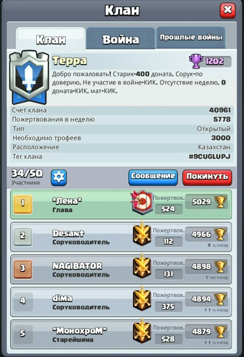

CLASH ROYALE
Clash Royale is a game for mobile devices of the RTS genre with elements of KKI, available on Android and iOS platforms, released on March 2, 2016 by Supercell. In the first year, Clash Royale brought its creators more than a billion dollars. And by 2020, the revenue from the game exceeded $3 billion. It is located in the same game universe with
Gameplay
The gameplay is based on battles in which you need to destroy enemy towers with the help of unique maps, as well as defend your towers from the enemy. Each player has 3 towers: two towers of princesses and one tower of the king. Destroying the opponent's king's tower leads to victory. Princesses have longer range and faster attack speed, but less health than the king. Initially, the King's Tower is in an inactive state. To activate it, the enemy must damage this tower or destroy one of the towers of the princesses. is based on battles in which you need to destroy enemy towers with the help of unique maps, as well as defend your towers from the enemy. Each player has 3 towers: two towers of princesses and one tower of the king. Destroying the opponent's king's tower leads to victory. Princesses have longer range and faster attack speed, but less health than the king. Initially, the King's Tower is in an inactive state. To activate it, the enemy must damage this tower or destroy one of the towers of the princesses.
Before the battle, the player can customize his playing deck by choosing eight cards with which he will play. Each card is worth a certain amount of elixir, which accumulates throughout the battle. If the players have the same number of towers in 3 minutes of normal time, a "sudden death" will begin and two more minutes will be added to the game time. To win in sudden death mode, you need to demolish at least one tower. In case none of the towers is destroyed, the player who deals more damage wins.
When winning in 1-on-1 mode, the player receives trophies, the number of which is used to make a rating of players. The more trophies a player has, the higher his position in the ranking. Also, when a certain number of cups is reached, the player moves to a new arena, which opens new cards and increases rewards from chests. As you progress through the game, you will receive rewards for achieving certain trophies. The rewards are: gold, chests, cards, crystals and emojis.
Cards
The cards are divided into four classes by rarity. Ordinary cards fall out in almost every chest, rare ones are rare, epic ones are even rarer, and legendary ones are the rarest. Only rare cards fall from a rare chest, only epic cards fall from an epic chest, and one legendary card falls from a legendary chest, starting from the 4th arena.
The cards are divided into buildings (they cannot move, lose health over time, depending on the type, they can attack enemy troops or produce an army or elixir), troops (move and/or attack), can only be placed on their own half, with the exception of the miner, goblin drill and spells. Spells can be placed in any part of the arena (except the log, the Barbarian barrel, and the Royal Mail). Almost all spells can cause imminent damage. Each card has its own unique abilities that can be useful in a given situation.
Each card has its own level. To increase the level of the card, you need to accumulate the required number of cards falling out of the chests, and then pay coins. The maximum level of cards is the 13th. After that, at the 13th level of the king, you can buy a star level for the card for crystals, which manifests itself in changing the graphics of the card. As the level of the card increases, its health and strength increases. By pumping cards, the player also increases the level of his towers (the level of the king). Their maximum level is also 13th.
Clans
Starting from Experience level 1, players can join or form clans. Joining or forming a clan enables the player to engage in friendly battles and clan wars. It also unlocks the feature of trading and requesting cards from clanmates after becoming level 2. Clan members can also chat and share emotes with their clanmates. A clan has a maximum player limit of 50.

Clan Wars
On April 25, 2018, Clan Wars were added. A clan war is separated into two days: 'Collection Day' and 'War Day'. To play in a Clan War, a Clan must have a minimum of ten players that are level 8 and above. On Collection Day, each player in a Clan gets to do three battles in a variety of game modes, which rotate every month. Upon completing a battle, the player earns cards, which go into their Clan's card collection. More cards are awarded upon winning a battle, and players earn more cards in higher Arenas. For the Clan War to progress to War Day, a minimum of ten players need to do at least one battle each. On War Day, a Clan is matched with four other Clans with a similar number of participants and Clan Trophies. Each participant gets to build a deck using only the cards that their Clan unlocked on Collection Day. Card levels are limited to the player's card level and the number of duplicate cards gained on Collection Day, with the lowest level having priority. Players also must have a card unlocked in their own collection to use it. Players use the deck they built in one battle (sometimes two). Each clan is ranked from 1st to 5th place based on the number of wins they have, with the rank decided by the number of Crowns each Clan has in the event that two Clans have the same number of wins. At the end of the War Day, all players that participated in the War receive a War Bounty containing Gold and sometimes Gems or Trade Tokens. Based on the War rank, Clans lose or gain a certain number of Clan Trophies. Clans progress through Clan Leagues by gaining Clan Trophies, and higher leagues result in better rewards. Clan Seasons last two weeks, and at the end of each season, a chest is awarded to every player that participated in a war during the season, with the number of cards in the chest being determined by the highest war rank the Clan had during the season and the highest league the Clan was in during the season.